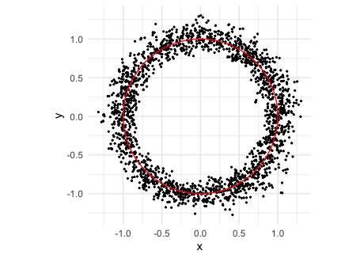
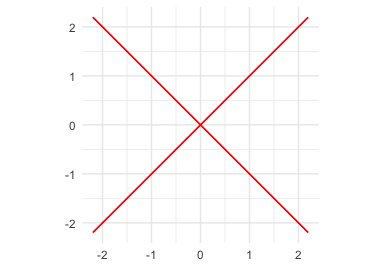

vnorm provides tools for sampling, visualizing, and projecting near real algebraic varieties defined by polynomial equations. It implements the variety normal distribution using mpoly for polynomial representations and Stan-based samplers. In addition to sampling with rvnorm(), the package includes pseudo-density evaluation via pdvnorm(), ggplot2 visualization with geom_variety(), and projection onto varieties with project_onto_variety().
Installation
You can install the development version of vnorm from GitHub with:
if (!requireNamespace("devtools")) install.packages("devtools")
devtools::install_github("dkahle/mpoly")
devtools::install_github("sonish13/vnorm")rvnorm() uses Stan/HMC as the primary sampling backend, so you should install cmdstanr and CmdStan for normal package use. A rejection sampler interface is also available (rejection = TRUE) and can be useful for quick examples or simple low-dimensional cases.
Quick Start: Sample and Plot a Variety
The main workflow is: define a polynomial variety, sample near it with rvnorm(), and visualize with geom_variety().
Stan/HMC (primary path):
p1 <- mp("x^2 + y^2 - 1")
samps1 <- rvnorm(
2000,
poly = p1,
sd = 0.1,
output = "tibble"
)
ggplot(samps1, aes(x, y)) +
geom_point(size = 0.4) +
geom_variety(poly = p1, inherit.aes = FALSE, show.legend = FALSE) +
coord_equal() +
theme_minimal()
Main Functions
-
rvnorm()samples from a variety normal distribution near a polynomial variety. -
pdvnorm()evaluates the pseudo-density (up to a normalizing constant). -
geom_variety()plots real 1D varieties in 2D usingggplot2. -
project_onto_variety()projects points onto a variety. -
compile_stan_code()pre-compiles reusable Stan models for repeated sampling with related polynomial forms.
rvnorm(): the main sampling function
rvnorm() is the main entry point for sampling near varieties defined by one polynomial (mpoly) or a system of polynomials (mpolyList). It supports:
- Stan/HMC sampling (default; best for most serious use)
- rejection sampling (
rejection = TRUE; good for quick examples and simple cases) - built-in pre-compiled Stan models (
pre_compiled = TRUE) for common polynomial structures - user pre-compiled Stan models (
user_compiled = TRUE) for repeated sampling of related polynomial forms
Common arguments:
-
poly: the polynomial or polynomial system defining the target variety -
sd/Sigma: controls concentration around the variety -
output: output format (for example"tibble") -
w: window size for unbounded varieties (and for rejection sampling) -
rejection: use the rejection sampler instead of Stan/HMC
The Stan/HMC path is the default and recommended mode for most use. The rejection sampler is available as a lighter-weight alternative for some low dimensional examples.
Default Stan/HMC usage:
Typical default workflow (sample, then visualize), shown above:
p2 <- mp("x^2 + y^2 - 1")
samps2 <- rvnorm(2000, poly = p2, sd = 0.1, output = "tibble")
ggplot(samps2, aes(x, y)) +
geom_point(size = 0.5, alpha = 0.35) +
geom_variety(poly = p2, inherit.aes = FALSE) +
coord_equal()Additional common rvnorm() usage patterns:
# Use a packaged pre-compiled Stan model when available (small degree/variable cases)
rvnorm(2000, mp("x^2 + y^2 + z^2 - 1"), sd = 0.1, pre_compiled = TRUE)
# Unbounded varieties typically need a window parameter w
rvnorm(2000, mp("x y - 1"), sd = 0.1, w = 2, output = "tibble")
# Multi-polynomial systems (underdetermined / overdetermined are both supported)
rvnorm(2000, mp(c("x^2 + y^2 + z^2 - 1", "z")), sd = 0.1, output = "tibble")
# Use Sigma for anisotropic concentration (single polynomial)
rvnorm(2000, mp("x^2 + y^2 - 1"), Sigma = diag(c(0.02, 0.10)^2), output = "tibble")
# Use Sigma with polynomial systems as well
rvnorm(2000, mp(c("x^2 + y^2 - 1", "x y - 0.25")), Sigma = diag(c(0.05, 0.08)^2))Rejection sampler usage (alternative path; currently the wrapper supports scalar sd):
set.seed(1)
p3 <- mp(c("x^2 + y^2 - 1", "x y - 0.25"))
samps3 <- rvnorm(
2000,
poly = p3,
sd = 0.1,
rejection = TRUE,
w = 1.5,
output = "tibble"
)
ggplot(samps3, aes(x, y)) +
geom_point(size = 0.5, alpha = 0.4) +
geom_variety(poly = p3, xlim = c(-2, 2), ylim = c(-2, 2), inherit.aes = FALSE) +
coord_equal() +
theme_minimal()
pdvnorm(): pseudo-density evaluation
pdvnorm() can be used with single polynomials and polynomial systems, and supports scalar, vector, or matrix sigma inputs depending on the setting.
geom_variety(): ggplot2-compatible variety plots
geom_variety() supports both single-polynomial (mpoly) and multi-polynomial (mpolyList) inputs and works with standard ggplot2 themes/scales.
p5 <- mp("(x^2 + y^2)^2 - 2 (x^2 - y^2)")
ggplot() +
geom_variety(poly = p5, xlim = c(-2, 2), ylim = c(-2, 2), show.legend = FALSE) +
coord_equal() +
theme_minimal()
p6 <- mp(c("x^2 + y^2 - 1", "x y - 0.25"))
ggplot() +
geom_variety(
poly = p6,
xlim = c(-2, 2),
ylim = c(-2, 2),
vary_colour = TRUE
) +
coord_equal() +
scale_colour_manual(values = c("steelblue", "firebrick")) +
theme_minimal() +
theme(legend.position = "top")
If a squared polynomial (for example, p^2) produces no contour at shift = 0, geom_variety() prints a suggested negative shift. Using that shift can help recover the plotted zero set in no-sign-change cases.
p7 <- mp("y^2 - x^2")
ggplot() +
geom_variety(poly = p7^2, xlim = c(-2, 2), ylim = c(-2, 2)) +
coord_equal()
#> All values are positive on the plotting grid; try shift = -0.000959513.
#> Zero contours were generated
p7 <- mp("y^2 - x^2")
ggplot() +
geom_variety(
poly = p7^2,
xlim = c(-2, 2), ylim = c(-2, 2),
shift = -0.000959513,
show.legend = FALSE
) +
coord_equal() +
theme_minimal()
project_onto_variety(): projection with visualization
The projection functions are useful for snapping points back to a variety and for inspecting projection behavior visually.
p8 <- mp("x^2 + y^2 - 0.25")
x0 <- c(1.3, 0.9)
(x0_proj <- project_onto_variety(x0, p8))
#> [1] 0.4110961 0.2846050
The red point is the starting value and the black point is its projection onto the variety. The grey segment shows the displacement from the starting point to the projected point.
Adaptive time stepping is used by default. The comparison below illustrates the homotopy projection path from the same starting point using fixed step sizes versus adaptive step sizes (similar to the paper figure). The open circles mark successive iterates along the path.

In each panel, the black curve is the target variety (an ellipse segment), the connected black path is the homotopy projection path from the same starting point, and the open circles show the successive iterates. The adaptive method is the default because it typically reaches the variety in fewer steps while maintaining the error tolerance.
Performance Notes
vnorm includes pre-compiled Stan models for common polynomial structures (up to three variables and total degree at most three). For repeated work with a custom polynomial form, use compile_stan_code() once and then call rvnorm() with user_compiled = TRUE on related polynomials with different coefficients.
p_template <- mp("x^4 + y^4 - 1")
compile_stan_code(poly = p_template)
p_new <- mp("2 x^4 + 3 y^4 - 1")
samps_new <- rvnorm(1000, poly = p_new, sd = 0.1, user_compiled = TRUE)Learn More
The accompanying paper describes the variety normal distribution, projection and sampling methods, and package applications in more detail. The README focuses on the main user-facing workflow: sample, visualize, evaluate, and project.
References
- Kahle, David and Hauenstein, Jonathan D. (2024). Stochastic Exploration of Real Varieties via Variety Distributions. arXiv:2410.16071
- Griffin, Zachary A. and Hauenstein, Jonathan D. (2015). Real solutions to systems of polynomial equations and parameter continuation. Advances in Geometry, 15(2), 173–187. doi:10.1515/advgeom-2015-0004
- Schenck, Henry (2015). Book Review: Numerically solving polynomial systems with Bertini. Bulletin of the American Mathematical Society, 53(1), 179–186. doi:10.1090/bull/1520